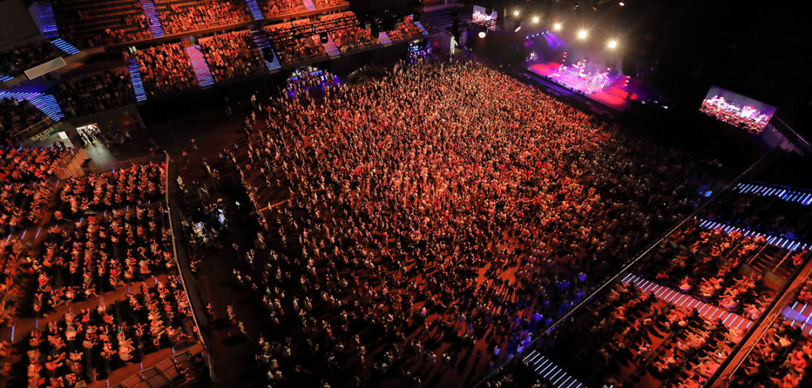

Los 40 Music Awards (estilizado como LOS40 Music Awards; anteriormente conocidos como Premios 40 Principales) son los premios concedidos por LOS40, emisora musical perteneciente a PRISA Radio. Creados en el año 2006 con motivo de la celebración del 40 aniversario de la fundación de la cadena a nivel mundial. Los premios se entregan en una gala, cuyos fondos van destinados a fines benéficos. Los ganadores de los premios son elegidos por un jurado profesional en aspectos musicales, a excepción de una categoría de votación popular. Desde 2011, los oyentes de América tienen sus propios premios y se han desligado de los premios entregados en España. Dichos premios se emiten en riguroso directo por las emisoras de LOS40, además de una emisora nacional y una televisora nacional por país.
Las puertas del WiZink Center de Madrid se abrirán al público a las 18:00 horas del 4 de noviembre, la misma hora aproximada a la que arrancará la alfombra roja con todos los artistas y famosos invitados. Sin embargo, la gala de premios no empezará hasta las 20:30 horas de la tarde.
La noche de la música en España se podrá seguir desde diferentes vías. Para quienes no hayan podido conseguir su entrada, no pasa nada, aún podrán seguir el Preshow de LOS40 Music Awards 2022, un espacio que se puede ver en nuestro canal oficial de YouTube de la mano de David Álvarez, Cris Regatero, Félix Castillo y Jesús Taltavull. Además, los espectadores podrán disfrutar, con todo detalle, de la alfombra roja con los invitados y de todo lo que pase en la noche de premios de la música nacional e internacional desde el canal de Divinity. ¡Será imposible perdérselo! Por supuesto, el público más fiel de la casa que prefiera seguir la gala de la manera más tradicional, también podrá saber todo lo que pasa en directo a través de las ondas con las voces de los mismos locutores de LOS40
